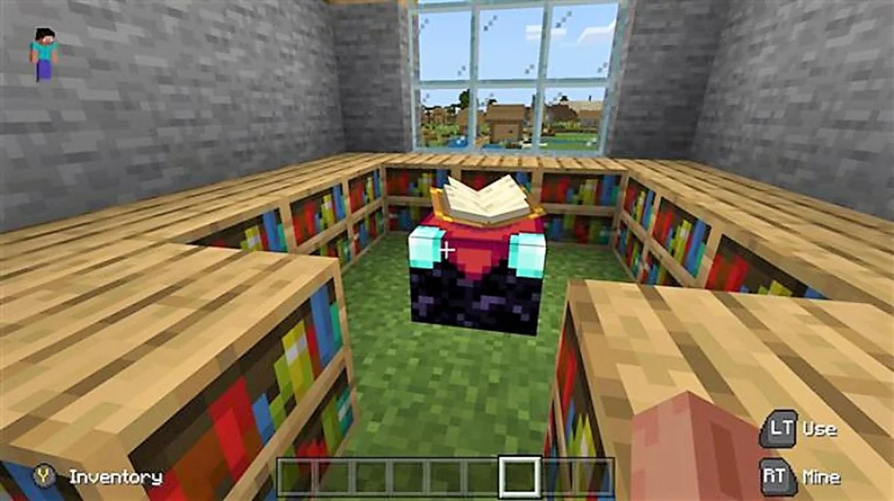
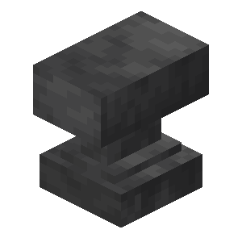
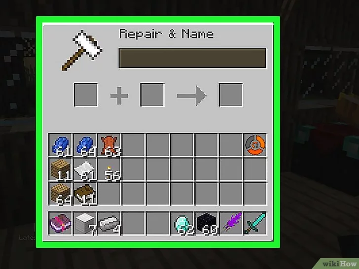
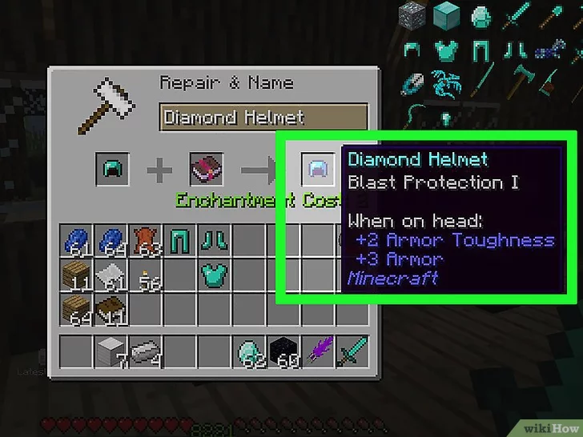

MESA DE ENCANTAMIENTOS

Conseguir una Mesa de Encantamiento en Minecraft no es nada difícil, pero para conseguir encantamientos de tercer nivel con ella, necesitarás la configuración perfecta, que implica un objeto en particular. Esto es lo que necesitas para hacer el encantamiento definitivo del juego.
La Mesa de Encantamiento es una característica muy útil en Minecraft, ya que puede convertir objetos normales como armas, armaduras, herramientas y más en objetos mágicos.
Como con cualquier otro buff del juego, hay niveles que puedes alcanzar con ella, pero para desbloquear su máximo potencial, necesitarás acompañar la mesa con otro objeto en particular. A continuación te explicamos cómo alcanzar el nivel 30 de la mesa de encantamiento en Minecraft.
ENCANTAMIENTOS DE MAXIMO NIVEL
Dado que los encantamientos son una pieza fundamental del juego, los jugadores querrán llevar su Mesa de Encantamientos de Minecraft a su máximo nivel lo más rápido posible.
Por suerte, el proceso es bastante sencillo. Para alcanzar el nivel 30, tendrás que colocar 15 estanterías alrededor de la mesa.
Puedes colocarlos de la forma que quieras, siempre que estén a poca distancia. Puede ser en un círculo casi completo de un piso rodeándola, o puedes hacer estanterías de dos pisos y ponerlas a cada lado de la mesa.
COMO UTILIZAR LA MESA DE ENCANTAMIENTOS
Una vez que lleves tu Mesa de Encantamientos a su nivel máximo, podrás usar los encantamientos de tercer nivel del juego:
- Ve a tu Mesa de Encantamientos e interactúa con ella para abrir el menú emergente.
- Bajo el icono del libro, coloca el objeto que quieras encantar.
- En la casilla de al lado, coloca 3 lapislázuli.
- Aparecerán tres encantamientos a la derecha, junto con los puntos de experiencia necesarios para cada uno de ellos.
- Elige el que quieras aplicar a tu objeto.
- Mueve el objeto a tu inventario.

YUNKE
Los yunques, entre otras cosas, se utilizan también para encantar objetos con Libros encantados.
Abre el menú del yunque. Al hacerlo, se abrirán tres casillas.
Coloca el objeto que quieres encantar. Puedes colocarlo en la casilla izquierda o en la central.
Agrega el libro de encantamiento. Este puede ubicarse en la casilla izquierda o la central.
Selecciona el objeto en la casilla resultante. Esta es la que se encuentra a la derecha del menú del yunque. Al seleccionarla, el objeto encantado pasará a tu inventario.